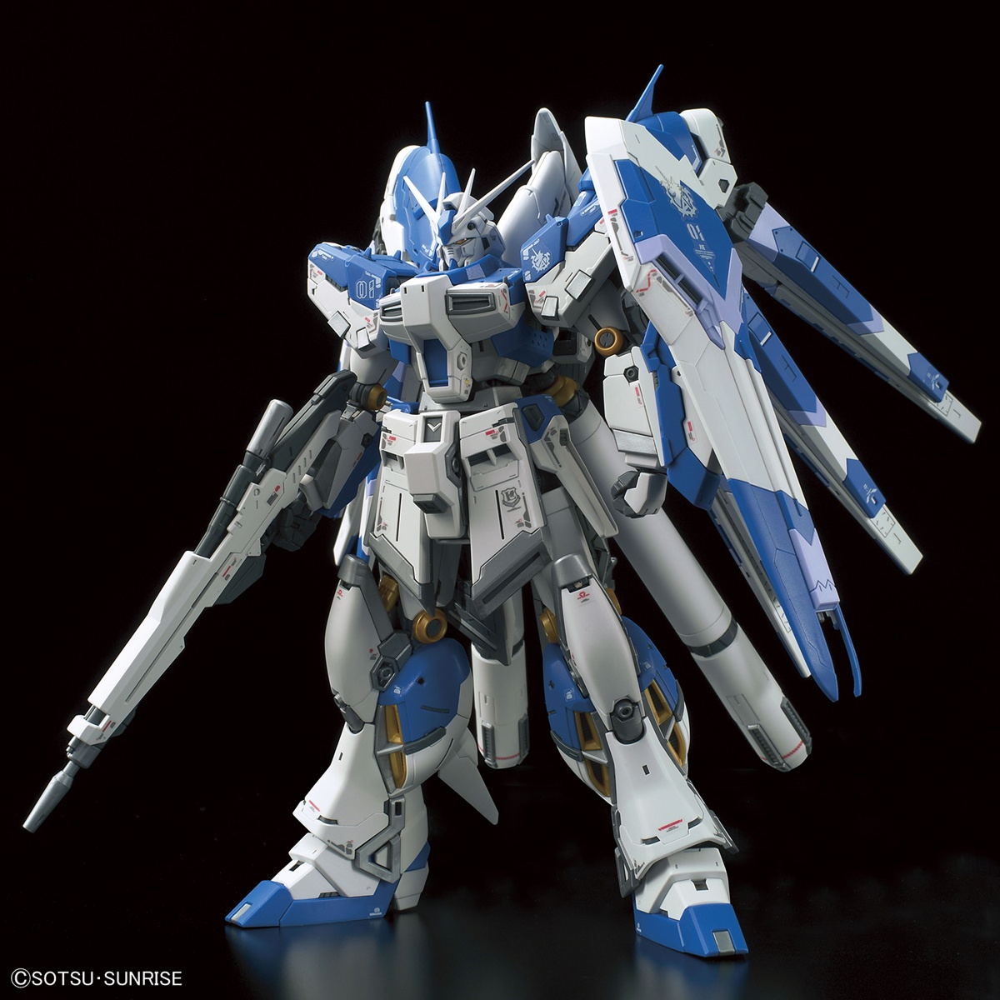

Gundam Anime and Models Info
Gundam Models
Gundam models are popularly referred to as Gunpla, which is coined from the combination of “Gundam” and “plastic”. Gundam models, or Gunpla, are plastic model kits of robots called mobile suits from the Japanese anime franchise, Gundam. They are popular among hobbyists and fans who enjoy assembling and customizing the kits. Following the rise in popularity of the Gundam series in Japan, hundreds of these model kits were released, with Gunpla building becoming a very popular hobby in the country and abroad.
What Are Gundam Models Gundam models are highly detailed and include a variety of parts and accessories, such as weapons, shields, and stickers for customization. Some kits also come with LED lights and motorized components for added realism. Gunpla kits require assembly and range in complexity from beginner-friendly snap-together models to advanced, multi-part kits for experienced modelers. Gunpla has become a popular hobby worldwide in the 1990s, with enthusiasts building and displaying their completed models at conventions and in online communities. The customization and building process allows fans to connect with their favorite Gundam series and characters on a deeper level. In addition to the standard plastic kits, there are also limited edition and exclusive Gunpla releases that can be highly sought after by collectors. Overall, Gundam models are a fun and engaging way for fans to bring their favorite anime to life and explore their creativity.
The video below show a gundam model perfect grade
What Are The Grades Of Gundam Models?
In the production of the Gundam models, Bandai uses a system of grading that tells how much detail a model has. Several models are available in different grades, and they depict the same machine in their general appearance. However, the detail of the parts is significantly different. The five most common grades of Gundam models are:
- High Grade (HG) - This grade is easy to build, uses many stickers and does not have great detail.

- Real Grade (RG) - This grade has more pieces and details than HG.
- Master Grade (MG) - This grade has more pieces and details, as well as fewer sticker sheets
- Perfect Grade (PG) -This grade has many different pieces and it is very detailed.

- Super Deformed (SD) -This grade is easy to build similar to Real Grade and Master Grade but on a smaller scale

When you’re out shopping for a Gundam model kit, these are the four most common grades that you will find, especially if you are visiting a local store that has a limited range of products. The High Grade and Real Grade models are released frequently. The Master Grade models are released just a few times a year, while the Perfect Grade models are released just once a year. As the grades go higher, they become harder to find and more expensive. The High Grade and Real Grade Gundam model kits are highly recommended for beginner builders because they have fewer pieces to put together than the other grades.
Here are is a link to buy Gundam Models Hobby Link Japan Gundam section